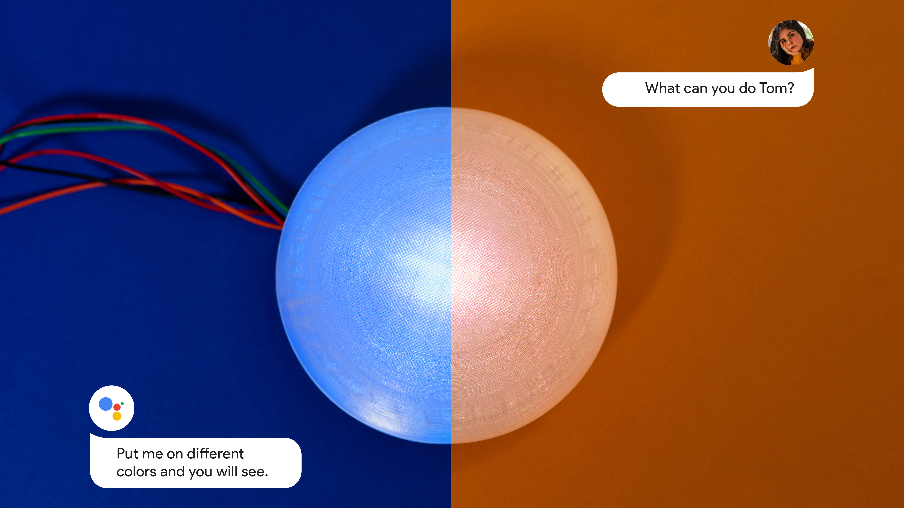

Unit 2 A Tool for Whom
Royal College of Art, London
Unity - Working Drawing Interface
Sketch, Principle - APP Interface & Interaction
Parsons School of Design, New York
Adobe Photoshop - Strokes Design
Unit 5 Launch Pad
Royal College of Art, London
Rhino - 3D Printed Physical Model
AE, PR - Real & Fictional Film
Unit 1 - Smart Habitat
Royal College of Art, London
Leap Motion, Kinect - Gesture Tracking
After Effects - Concept Video
Unit 4 Design For The Unsettling
Royal College of Art, London
Arduino - Functional Prototypes
IFTTT - Online IoT Platform
Unit 3 - The Exhibitionist
Royal College of Art, London
Raspberry Pi - Tangible Heartbeat Prototype
AR.js, A-Frame - AR Poster
Anne-Marie Heck, Rashmi Bidasaria
AcrossRCA - SenseAbility
Royal College of Art, London
Scent Making
A/B Testing
Moritz Dittrich, Janina Frye, Sushila Pun, Yiling Zhang


Taking cat as an example, users can train AI pets by taking pictures of what they think are cats in daily life. They can also import the previous images from the album, or choose from the provided network image libraries.
Since users choose different images for training skills, the texture will reflect users' unique perspectives.
For parents, they can better understand the world in the eyes of children and the cognitive development process of children by viewing these images and statistics.
Obvious Art - AI portrait fetched over $400,000
Train AI with lots of famous art works
But how AI works is still a black box for the public
New relationship with machine from subordination to collaboration
when tool has its own thought?
How to let the general public better understand AI and even cooperate with it?
Based on Pix2Pix - Image-to-Image Translation with Conditional Adversarial Nets & Keijiro Takahashi Pix2Pix for Unity.
AI just try to make suggestions instead of taking over control.
Suggestions provided by AI doesn't aim to obtain a suitable answer, but can create uncertainty and inspire users.
Can AI help us to transcend our experience or logic or methods, so that human creativity can be further released?
How to cultivate creativity?
1. Go out in nature and capture inspiration from life
2. Art-related activities such as drawing and photography
The Concrete Operational Stage (7~11)
Children are able to incorporate inductive reasoning. Inductive reasoning involves drawing inferences from observations in order to make a generalization.
Drawing can extend child’s imagination and creativity
Child from 1~6 can always think independently
Child after 6 are more easy to be limited by others
So the output highly depends on what they think “Cat” is.
depending on their views of the world?
How might we design a tablet app to
extend creativity and maintain independent thinking for children(6~10)
by using machine learning technology?
Virtual pet games have similar logic with machine learning process

Deviated from the main objective - cultivate creativity

Playful/humorous interactions had the effect of reinforcing anthropomorphic qualities, setting unrealistic users’ expectations of CA capability.
Human and animal have a wide variety of modalities to express emotional and internal states for interaction
These have been studied unequally, with a heavy focus on body movement, facial expression, and vocalics
for the CA to express emotional and internal states for interaction？
AI has given machine situational awareness and autonomous cognition capabilities.
From passive interaction to proactive interaction.
Spoken dialogue interfaces will become the future gateways to many key services,and might be the next natural form of HCI.
But voice works as the only channel for expression.
As cryptic coloration is not only for camouflage, also working as a tool for information exchange to express intentions and emotions. Machine 1 adapts to the surrounding environment by changing color and only stands out to attract attention when necessary - Calm technology.
Smell can strongly influence human perceptions and expectations of living things. Machine 2 diffuses different smells designed from machine perspective to indicate different emotional and internal states of the smart speaker.
What does the machine's emotions smell like? I selected 4 basic emotions and tried to make scents from the machine's perspective. The angry scent is designed to have a smoky, electronic burning scent. Because if someone destroys the circuit inside the machine, then the machine may be very angry about it. The sad scent is designed with a wet feeling, and the wet environment is not suitable for the machine to work, so the machine will also feel sad in this situation.
Some Creatures display their internal states(fear, excitement, and other emotional states) through skin texture change. Texture is widespread and easily readable behavior. But it is rarely explored as a new way of human-computer interaction. Machine 3 expresses its internal state using skin texture changes.

Voice Control Prototype
Map with Russell’s circumplex model of emotions
Texture operates on two channels
Provide both tactile and visual sensation
Frequency - represent the Arousal dimension
Amplitude - represents the Valence dimension
Gesture is a very subtle behavior to effectively convey information. Different combinations between gesture and voice expressions will generate richer and funnier meaning of the response. Machine 4 raises its hands to actively inform but not overburden user. Sometimes he will initiate interactions for his own benefit rather than to provide services to humans.
Expectations of Intelligence Level
Confidence Interval for ML Model Accuracy
Different Proportions also affect user expectations. We will expect more for objects with a ratio close to the human body
The nuances of raising hands adjust the user's conceptual model of CA and establish accurate user expectations